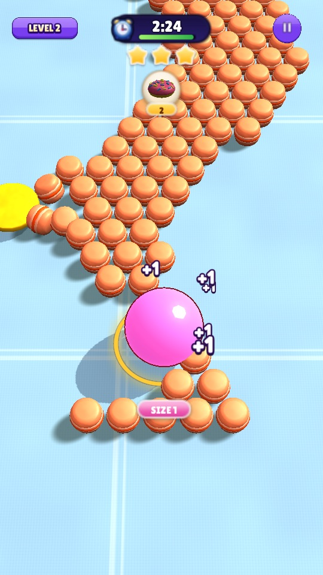
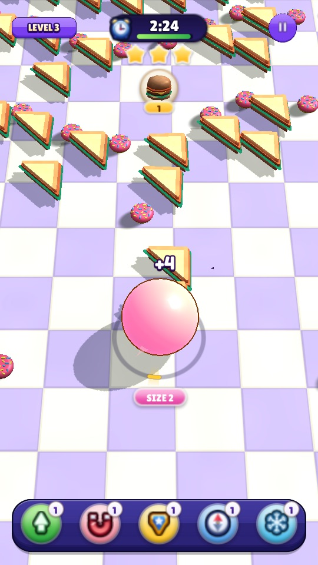
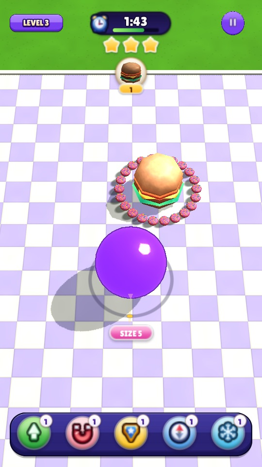

Gobbly.io
Roll, gobble and grow! Eat everything on the list before the clock runs out.
Gobbly.io is a free casual game for iPhone and Android where you roll a hungry little ball around colourful maps, eat the goal items before the timer runs out, and grow bigger with every bite. Start with cherries and cookies, end up swallowing cakes, chairs and cars. A level takes about 1 to 3 minutes.




Quick facts
| What kind of game | Casual "eat and grow" arcade game with levels |
|---|---|
| Controls | Touch anywhere on the screen and drag: the ball rolls the way you drag. Lift your finger and it stops. |
| How you win | The game is made of levels. Each level shows a few goal cards at the top, such as 120 cookies, 30 donuts and 4 burgers. Eat every goal item before the timer reaches zero and you win the level. There are hundreds of levels, with HARD and SUPER HARD levels along the way. |
| Level length | about 1 to 3 minutes |
| Price | Gobbly.io is free to download and free to play. |
| Ads and purchases | There are optional reward videos you can choose to watch for extras such as more time, a heart or coins. From level 4, a short full-screen ad can also appear now and then between levels and when you come back to the game. Optional purchases are coin packs, booster bundles, a Gold Season Pass and a one-time Remove Ads. Every level can be beaten without buying anything. |
| Offline | Yes. Every level works without Wi-Fi or mobile data. Ads, purchases and cloud saving need the internet. |
| Players | Gobbly.io is a single-player game. There are no other balls in a level and no live opponents. The Weekly Contest and rankings are worked out on your phone, and there is no chat. |
| Age rating | rated 4+ on the App Store; the game is meant for players aged 13 and over |
| Phones | iPhone with iOS 15 or newer, or Android 7.0 or newer. Download size about 90 MB. |
| Languages | English |
| Made by | Sultan of Niyyat |
What makes it different
Most "eat and grow" phone games use a hole in the ground that things fall into. In Gobbly.io you are a ball. It rolls, it has weight, and big piles of food tumble down into it as you eat them from the bottom. Every level gives you a clear shopping list and a clock, so there is always a goal: "just 4 burgers left".
Questions players ask
The basics
Playing and getting better
- What can the ball eat, and why can't I eat that yet?
- How do you grow faster in Gobbly.io?
- How do you beat a hard level in Gobbly.io?
- What are the most common beginner mistakes?
Is it right for you?
- Who should play Gobbly.io?
- Why are games like Gobbly.io so satisfying?
- Is Gobbly.io a relaxing game?
- Is Gobbly.io suitable for kids?
- How long is a level, and is it good for short breaks?
Phones, money and progress
- Is Gobbly.io free?
- How do you remove ads in Gobbly.io?
- Can you play Gobbly.io offline?
- Is Gobbly.io multiplayer?
- Will Gobbly.io run on my phone?
- Will I lose my progress in Gobbly.io?